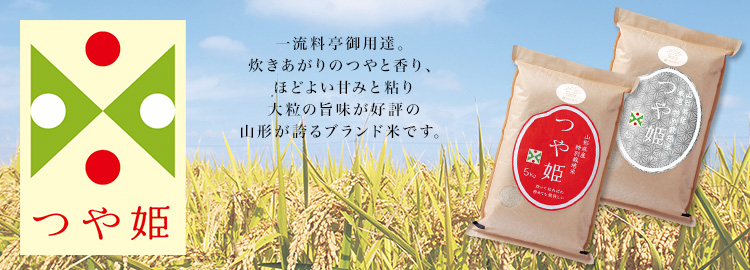
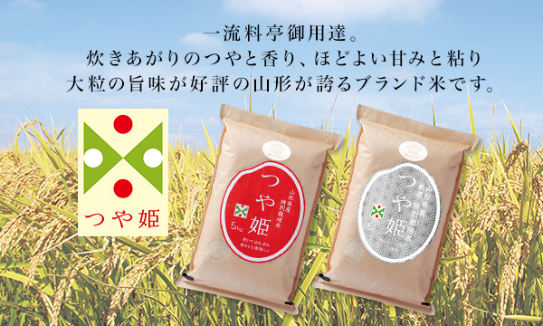
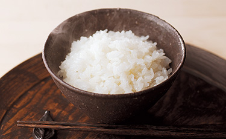
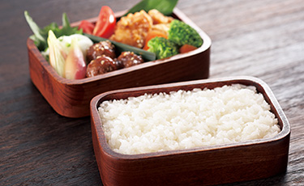
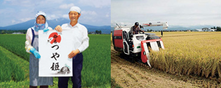
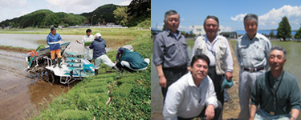
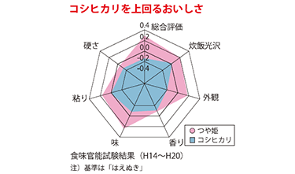
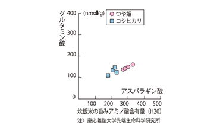
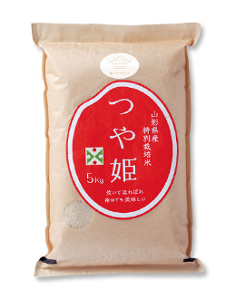
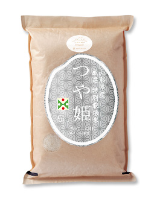

リンベルが日本一と認めた「極みの味」
山形が生んだ極上の米


ここが「極み」
- 【特別栽培米】節減対象農薬の使用回数が50％以下、化学肥料の窒素成分量が50%以下。
- 【厳選米】タンパク質含有率が、山形県基準よりも低い、乾物換算で6.7%以下。
- 【有機米】化学合成農薬や化学肥料を3年以上使用せずに栽培。
出羽三山の裾野に広がる日本一のブナの森。豊かに湧き出す水、そして長い時を経て育てられた肥沃な農地。つや姫は、そんな素晴らしい山形の自然の中で、米作りのプロフェッショナルたちの手によって、10年の歳月をかけて開発された山形県が誇るブランド米です。
リンベル厳選の2種のつや姫を限定でご提供いたします。
数量限定となりますので、ぜひこの機会にお求めください。
- 【山形県置賜地方 つや姫】
- リンベル公式チャンネルでは商品の特徴やこだわりを生産者の声とともにご紹介いたします。
ぜひご覧ください。
商品のこだわりポイント
シンプルな和惣菜がごちそうに。お米本来の旨みと甘みが口に広がる贅沢。
お米の粒がしっかりと大きく、つやつや輝いている炊きたての「つや姫」。その名にふさわしい美しさ。甘い香りにうっとりしながら口に含み、ひと粒ひと粒のもっちりとした食感を楽しみながら噛むうちに、お米が持つ本来の旨みと甘みが口いっぱいに広がります。
炊きたてのつや姫には、お味噌汁とお漬物などのシンプルな和のおかずがぴったり。冷めてもまた格別の旨みがあり、おにぎりやお弁当にも最適。
山形の農の匠が丹精込めて育てた特別なお米です。


国が定めた品質基準を満たす、認定生産者のみが作る安心安全。
つや姫のこだわりは味わいだけではありません。安心安全にも徹底的にこだわり、県や地元農協の基準はもちろん、国が定めた基準もクリア。
品質を守るために、つや姫を作ることができる生産者は、ブランド化戦略実施本部が認定した高い技術力を持った生産者のみに限定するというルールを制定しています。


公正な評価機関も認めた本物の味わい。
（財）日本穀物検定協会が「特A」と評した、おいしさの秘密。
つや姫のこだわりは味わいだけではありません。安心安全にも徹底的にこだわり、県や地元農協の基準はもちろん、国が定めた基準もクリア。
品質を守るために、つや姫を作ることができる生産者は、ブランド化戦略実施本部が認定した高い技術力を持った生産者のみに限定するというルールを制定しています。


スタッフの声
バイヤー＆エディター
- 粒の大きさの違いは一目瞭然！
甘みも抜群で、冷めてもおいしいのでお弁当家族にはもってこい！ - リンベルバイヤー 小林
- 炊き立てはもちろんだけど、冷めても固くならずに旨味もしっかり残ってるのは驚き！
普通のお米とは明らかに違います！ - エディター T
ご注文はこちら
-

-
